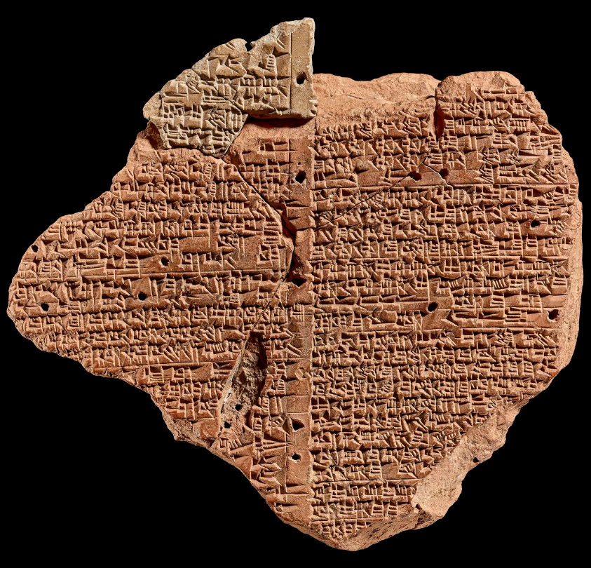
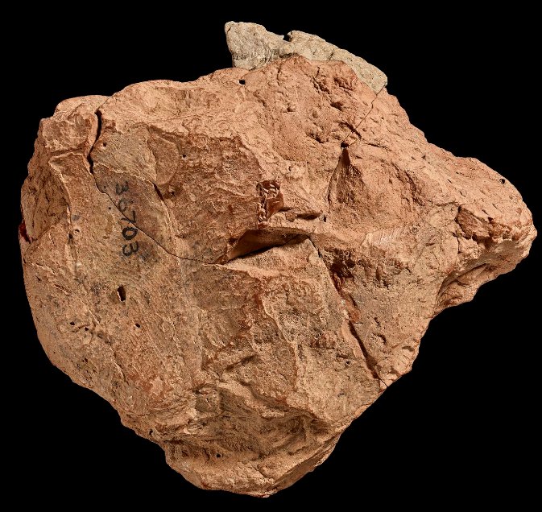
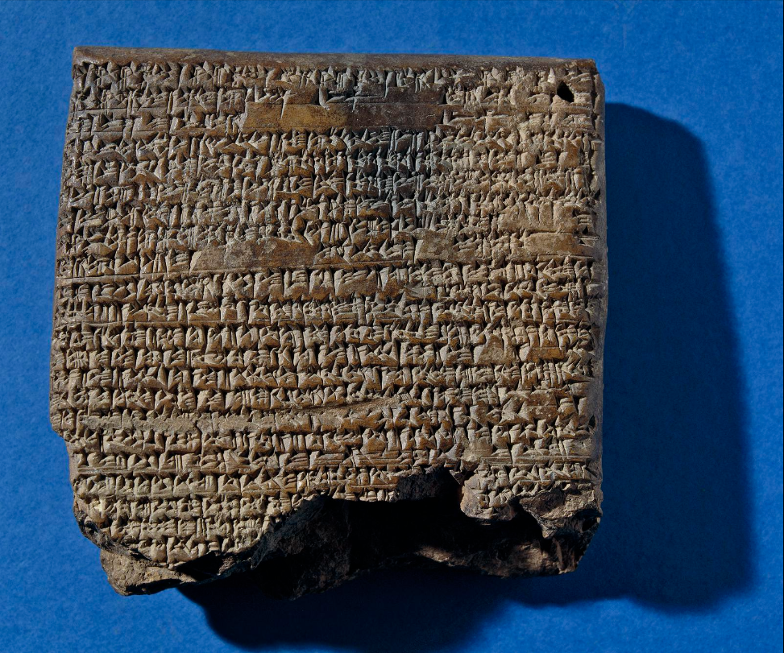

Entry0002
The artifact BM 36703 is a fascinating piece that, though missing several critical areas needed to complete the spell, shows many motifs of necromancy that are passed down for the next several centuries. The artifact itself is a clay tablet found in modern day Southern Iraq, in what was Babylon.
I was unfortunately unable to find a precise dating on this item, though another clay tablet, K 2779, has been dated in the 7th century BC. K 2779 shares wording with BM 36703 and they are likely to have been duplicates of the same spell. K 2779 will, in fact, be instrumental in our examination as it contains some of the missing parts of BM 36703 and is indeed the older of the two tablets. However, the main body of this work is comprised of BM 36703 and as such will be our main focus.
The tablet BM 36703 appears to have originally been created with writing on at least two of its sides, however its reverse side has been so damaged that only fragments of words remain. The obverse side is still quite intact; substantially enough for an examination of the spell on its face. To our benefit, the author of the work was likely a formally trained scribe. The tablet features ruling lines that keep all the cuneiform very neat and the firing holes found are very well formed. This was not unusual as often the only people who were literate in Babylon were trained scribes, wealthy merchants, and those of the ruling class such as kings and priests.
What is far more unusual is the actual contents of the tablet. This tablet describes a ritual that would enable one to talk to an eṭemmu, a ghost. The belief in ghosts at this time was widespread, and so were rituals involving ghosts, however these were almost exclusively towards the purpose of pleasing the ghost or exercising it. When someone died, it was a common expectation of a relative to take on duties to care for the deceased. These were considered the family ghost(s) and the relatives, often the men in the family though we have many examples of women, take on the duty of caring for the ghost. These duties included funerary offerings, remembering and saying the name of the deceased, as well as giving food and fresh water. It was believed that if one did not, the ghost of the deceased would suffer hunger and thirst, finding relief only from thrown away scraps. If these duties were ignored it was expected that the ghost would become malevolent and be the cause of a haunting. Often, to see a ghost was bad luck, to hear one's cry could mean illness or death, and many precautions were taken to avoid or appease ghosts.
These tablets do indeed take precautions, but the aim is to quite explicitly see a ghost. This operation would have likely been seen as taboo, or at the very least a risky operation, in the Babylonian Empire. To open oneself up to possible death by the evil cry of a ghost is no small feat. To best understand what was required of a practitioner, however, we must refer to the ritual itself.


A transcription and translation of the text was found in an article written by Irving L. Finkel in Archiv für Orientforschung, specifically the 1983/1984 edition. The text will first be presented in a transliteration of the original text on the left, its corresponding English translation on the right. The tablet displays two columns on the obverse side. We will begin with Obverse Column i of the tablet below:
Obverse Column i
- [............] x x
- [............] x TI-qi
- [............] mut-tap-ri-ir-ri
- [.......... ZÌ G] Ú.TUR i-te -en
- [.......... a]na IGI MUL AB li-bit x x
- [.......... ş]u-pur BANŠUR [x (x)] x
- [......... NÍG.N]A ˹ŠEM.LI GAR˺-an
- [..........].˹NA˺ ŠEM.LI ina KI.A. dÍD
- [.........]x ÉN an-ni-tú ŠID-nu ki-a-am DUG-GA
- [......] ˹anˀ˺-ni-tu ina KI.NE TI ka-lu-u ÚŠ KUŠU ˹SÚD˺
- [x x x] x-ma 7-šú ÉN an-ni-ta ana ŠÀ Ì.GIŠ BI ŠID-ma
- [(x x)] ana IGI dUTU IGI.MEŠ-ka ŠÉŠ-ma
- [(x x)] ta-ša-as-si-ma ip-pal-ka
------------------------------------------------------------- [ÉN]˹a˺-ba-me-en za-e-me-en a-ba-me-en za-e-me-en [ma]n-ni at-ta man-nu at-ta
- [šá s]u-ur-ri su-ur-ri na-piš-ta ṭa-ab-ta téš-te-né-a-ú
- [udug ḫul-gá]l dalad ḫul-gál gidim ḫul-gál gal-lá ḫul-gál
- [..........] x-˹e˺-ne gidim ḫul-gál ul za gi gid[im ḫu]l-gál
------------------------------------------------------------- [..........]x-˹ti˺ la ip-pa-[lu]-ka
- [...........l]aˀ ip-pa-lu-ka zi [x (x)] x ki
- [ÉN(?) ....... g]al?-e-ne [ŠID-nu(?)] KI.MIN
- [DÙ. DÙ.BI ........]x[(x)]x ÈŠ AM
- [..............]x gi AZ
- [................]-x-ti
- [.................]-ti
- [................]x GAR-an
- [.................. -k]aˀ
Obverse Column i
- [..........] ..
- [..........] .. you take,
- [..........] roaming,
- [..........] he should grind up lentil flour
- [......] before the AB star, the brick ...,,
- [........] the «claw» of the table .[.].
- [......] you set up a censer with juniper,
- [.................].. juniper in sulphur
- [.................].; you recite the incantation as follows:
- [.....] this [...] you crush in ..., kalû mineral, (and) blood of a kušû,
- [........], and seven times you recite this incantation over that oil;
- [(...)] you anoint your eyes before Šamaš, and
- [when(?)] you call (to him) he will answer you.
------------------------------------------------------------- Incantation. Who are you? Who are you?
- You who always seek out the good throat/life,
- [(Whether)] evil [spirit], evil šēdu, evil ghost, evil demon
- [...........]s, O evil ghost, ... O evil ghost!
------------------------------------------------------------- [If(?).........]... will not answer you
- [.............. will]not answer you ......
- [You recite the incantation(?) ..] the great [...]; DITTO.
- [Its ritual: .........] ... excrement of a wild ox,
- [.....................]... of a bear,
- [........................]...
- [........................]...
- [........................] you set up;
- [........................] ..
Column ii of the obverse side of the tablet continues as such:
Obverse Column ii
- x [......................] x mi i [š x x x (x x)]
- x [x x x (x)] x x x ga še SAḪAR qá-qá-r[i´ x x (x x)]
- ˹GIDIM e-tú˺-ti li-š[e-l]a-an-ni UZU.SA UG l[i-x-x]
- gul-gul gul-gul-la-at a-ša-as-[si-la/ki]
- ša ŠÀ gul-gul-la-ta li-pu-˹la˺-[an-ni]
- dUTU pe-tu-ú ik-le-t[i (ÉN) ]
------------------------------------------------------------- DÙ.DÙ.BI MUŠEN ḫur-ri NITA u MU= NUS SAḪAR SILA.LIMMU.BA SAḪAR ḫal-lul-l[a-a-a]
- šá-ḫi-ṭì šá EDIN ŠIKA SILA.LIMMU.BA za-qip-tú ina Ì BUR LU[Mˀ (x x)]
- l-niš tuš-te-mid tuš-bat ina še-rim lu GIDIM lu NAM.[x x]
- lu gul-gul-la ŠÉŠ-ma ta šá-as-si-šu-ma ip-pa[l-ka]
------------------------------------------------------------- ÉN ì IR-ḫa-ab ì IR-ḫa-ab gidim-e ì IR-ḫa-[ab]
- gidim igi-bar ì IR-ḫa-ab gi-ir-gi-ia-am-ma[ke]
- igi-bar igi-bar-bar gidim-ma-[ke (ÉN)]
------------------------------------------------------------- KA.INIM.MA LÚ GIDIM IGI.BAR.RA.[(KE)]
------------------------------------------------------------- DÙ.DÙ.BI GIŠ GIBIL ḫas-ḫal-ti GIŠ ASAL [SIG-su]
- ini A Ì KAŠ GEŠTIN
Ì.UDU MUŠ Ì.UDU UR.MAH Ì.UDU AL.[LU ḪA] - LÀL BABBAR da-li-la šá ŠÀ NA PEŠ zapx-(KU)-pi UR.GIR zapx-pi [SA.A]
- zapx-pi KA˟A zapx-
ḫur-ba-bil ù zapx- EME.ŠID SA GIŠ.U[MBIN BIL.ZA.ZA] - ap-pat « ap-pat» ir-ri BIL.ZA.ZA PA ṣar-˹ṣa-ri˺[šá GÙB Ì.UDU]
- GÌR.PAD.DU GÌD.DA šá KUR.GI MU= ŠEN UD.˹DU˺ [GAZ SIM]
GEŠTIN A GA Ú am-ḫa-ra ḪE.ḪE - É[N 3-šú ŠID-ma IGI.MEŠ-ka ŠÉŠ-ma] GIDIM ta-ba-ri it-ti-k[a i-qab-bi(?)]
- ta-na-ṭal-ma it-t[i-ka i-dab-bu-ub]
------------------------------------------------------------- ÉN i-ru-ru i-ru-r[u ............]
- GIDIM i-ri-ma ma-[............]
------------------------------------------------------------- KA.INIM.MA [..............]
Obverse Column ii
- [.................] ... [...............]
- [.................] ... dust of the Underwor[ld ......]
- May he bring up a ghost from the darkness for me! May he [put life back(?)] into the dead man's limbs!
- I call [upon you], O skull of skulls:
- May he who is within the skull answer [me!]
- O Šamaš, who brings light in (lit. who opens) the darkne[ss! (ÉN)]
------------------------------------------------------------- Its ritual: you crush (?) a male and female partridge (?), dust from a crossroads, 'dust' of a jumping cricket (?) of
- the steppe, (and) an upturned potsherd from a crossroads in pūru oil, [(...)];
- You mix it all together and leave it to stand overnight. In the morning you anoint either the eṭemmu (figure), and/or the NAM.[...],
- and/or the skull, and when you call upon him he will answer you.
------------------------------------------------------------- -
- -
- -
------------------------------------------------------------- An incantation to enable a man to see a ghost.
------------------------------------------------------------- Its ritual: (you crush) moldy wood(?), fresh leaves of Euphrates poplar
- in water, oil, beer (and) wine. You dry, crush, and sieve snake-tallow, lion-tallow, crab-tallow,
- white honey, a frog (?) (that lives) among the pebbles, hair of a dog, hair of a cat,
- hair of a fox, bristle of a chameleon (and) bristle of a (red) lizard, «claw» of a frog,
- end-of-intestines of a frog, the left wing of a grasshopper, (and) marrow from the
- long bone of a goose. You mix (all this) (in)
- wine, water, (and) milk with amḫara plant. You recite the incantation three times and you anoint your eyes (with it), and
- you will see the ghost: he will speak with you.
- You can look at the ghost: he will talk with you.
------------------------------------------------------------- Incantation. They panic(ked)/cursed, they panic(ked)/cursed [........]
- The ghost covered (?) . [..........................]
------------------------------------------------------------- An incantation [ to .........................]
It should be noted that lines eleven through thirteen in the above have not been translated. It appears that lines eleven through thirteen may have been copied from another, older, tablet and the text that was copied to this tablet is corrupted. It is possible that the text was corrupted on the earlier tablet as well. While we are able to guess at some of the words, none are definitive nor cohesive enough for me to feel confident in reproducing.
Interestingly, it is from these same three lines that we find a continuation of the text on K 2779. As previously stated, K 2779 is the older of the two tablets, yet we find the same untranslatable words. The first nine lines of K 2779, however, are nearly identical to lines eleven through twenty-three on BM 36703. Below is a side by side comparison.
11. ÉN ì IR-ḫa-ab ì IR-ḫa-ab gidim-e ì IR-ḫa-[ab] 12. gidim igi-bar ì IR-ḫa-ab gi-ir-gi-ia-am-ma[ke] 13. igi-bar igi-bar-bar gidim-ma-[ke (ÉN)] ------------------------------------------------------------ 14. KA.INIM.MA LÚ GIDIM IGI.BAR.RA.[(KE)] ------------------------------------------------------------ 15. DÙ.DÙ.BI GIŠ GIBIL ḫas-ḫal-ti GIŠ ASAL [SIG-su] 16. ini A Ì KAŠ GEŠTINÌ.UDU MUŠ Ì.UDU UR.MAH Ì.UDU AL.[LU ḪA] 17. LÀL BABBAR da-li-la šá ŠÀ NA PEŠ zapx-(KU)-pi UR.GIR zapx-pi [SA.A] 18. zapx-pi KA˟A zapx- ḫur-ba-bil ù zapx- EME.ŠID SA GIŠ.U[MBIN BIL.ZA.ZA] 19. ap-pat « ap-pat» ir-ri BIL.ZA.ZA PA ṣar-˹ṣa-ri˺[šá GÙB Ì.UDU] 20. GÌR.PAD.DU GÌD.DA šá KUR.GI MU= ŠEN UD.˹DU˺ [GAZ SIM] 21. GEŠTIN A GA Ú am-ḫa-ra ḪE.ḪE 22. É[N 3-šú ŠID-ma IGI.MEŠ-ka ŠÉŠ-ma] GIDIM ta-ba-ri it-ti-k[a i-qab-bi(?)] 23. ta-na-ṭal-ma it-t[i-ka i-dab-bu-ub]
1. ÉN ì IR-ḫa-ab ì IR-ḫa-ab gidim ì IR-ḫa-ab 2. gidim igi-bar ì IR-ḫa-ab gi-ir-gi-ia-am-ma-ke igi AN igi-bar gidim-am-ma-ke ------------------------------------------------------------ 3. KA.INIM.MA LÚ GIDIM IGI.BAR.RA.KE ------------------------------------------------------------ 4. DÙ.DÙ.BI GIŠ GIBIL GIŠ ḫas-ḫal-ti GIŠ ASAL SIG-su ini A Ì KAŠ GEŠTIN TI Ì.UDU MUŠ SÚD 5. Ì.UDU UR.MAH Ì.UDU AL.LU ḪA GABA.UD.UD da-li-la šá ŠÀ NA PEŠ zapx-pix (GEŠTUGII) UR.GIR 6. zapx-pix SA.A zapx-pix KA.A zapx-pix ḫur-ba-bil ù zapx-pix EME.ŠID GIŠ.UMBIN BIL.ZA.ZA 7. ap-pi ir-ri BIL.ZA.ZA PA ṣar-ṣa-ri šá GÙB Ì.UDU GÌR.PAD.DU GÌD.DA šá KUR.GI MUŠEN UD.DU GAZ SIM 8.ina Ì KAŠ SAG KALAG.GA Ú am-ḫa-ra ḪE.ḪE ÉN 3-šú ŠID-ma IGI.MEŠ-ka ŠÉŠ-ma 9. GIDIM ta-na-ṭal-ma it-ti-ka i-da-ab-bu-ub
Here, however, is where BM 36703 and K 2779 now depart. K 2779 continues from line ten below.
10. ana ḪUL ši-si-it GIDIM TAR-si ŠIKA DU ŠUB-i ina A ta-sàk-ma É i-sal-laḫ 3 u-mi ki-is-pa ana GIDIM kim-ti-šú i-ka-sip 11. KAŠ ŠE.SA.A BAL-qi ana IGI UTU NÍG.NA ŠEM.LI i-sar-raq KAŠ SAG BAL-qi NÍG.BA dUTU GAR-an UR GIM DUG.GA ------------------------------------------------------------ 12. dut di.ku an.ki.a sag.kal da.nun.na.ke.ne dutu di.ku kur.kur.ra.ke dutu sag.kal pa.è.a 13. at-ta-ma la-it-su-nu dUTU DI.KU šá e-la-a-ti ana šap-la-a-ti 14. šá šáp-ta-a-ti ana e-la-a-ti túb-bal GIDIM šá ina É.MU KA-ú lu-u AD AMA lu-u ŠÉŠ NIN 15. lu-u DUMU ma-am-ma-na ma-šu-ú lu-u GIDIM mut-tag-gi-šú šá pa-qi-da NU TUKU-ú 16. ki-is-pu ka-sip-šú ˹mu-ú˺ na-˹qu˺šú ˹lu˺-mu-˹un˺ «nu?» ši-si-šú EGIR- šú lil-lik 17. [l]u-mu-un ši-si-šú šá ḪUL-tim a-a TE-a 3 u-mi an-na-a DÙ.DÙ-uš-ma an ḫu na? ḫe-pí 18. [ŠUI]I-šú LUḪ-si Ú.SIKIL.LE-ma ina Ì: AL.TIL: .GIŠ ŠÉŠ ------------------------------------------------------------ 19. [DIŠ GID]IM ina É NA is-si UG ina É NA UG BAD-ma ZI.GA ḪUL-tim ina É ˹NA È?˺ ḪUL BI ana LÚ u É-šú NU TE-e ------------------------------------------------------------ 20. [ina UD. GURUM,MA] ˹a˺-na dUTU ú-red-di ina še-rim ina KÁ KI ˹GÌR pár-sat KI SAR A˺ K[Ù SUD x x x]x GI.DU x x [x] x 3 ŠUKU.MEŠ 2 TA.ÀM 21. [x x GA]R?-an ZÚ.LUM.MA ZÍD.A.TIR DUB NINDA.˹Ì˺.[DÉ.A LÀL Ì.NUN.NA ......] x[........]x.TAG.GA ta-za-qap 22. [.......]-x GAR-an KAŠ SAG ˹BAL!˺-q[í......................]-x 23. [..........]-x x[...]
10. In order to avert the evil (inherent) in a ghost's cry you (sic) crush a potsherd from a ruined tell in water. He should sprinkle the house (with this water). For three days he should make offerings to the family ghost(s). 12. He should pour out beer (flavoured with) roast barley. He should scatter juniper over a censer before Šamaš, pour out prime beer, offer a present to Šamaš, and recite as follows: ------------------------------------------------------------ 13. O Šamaš, Judge of Heaven and Underworld, Foremost One of the Anunnaki! O Šamaš, Judge of all the Lands, Šamaš, Foremost and Resplendent One! 14. You keep them in check, O Šamaš, the Judge. You carry those from Above down to Below, 15. Those from Below up to Above. The ghost who has cried out in my house, whether of (my) father or mother, whether (my) brother or sister, 16. Whether a forgotten son of someone, whether a vagrant ghost who has no-one to care for it, 17. An offering has been made for him! Water has been poured out for him! May the evil in his cry go away behind him! 18. let the evil in his evil cry not come near me! <...> You do this repeatedly for three days, and ... «new break». 19. You wash his hands, you anoint him with Ú.SIKIL: «It is finished»: in oil. <...>. 20. If a ghost cries out in a man's house there will be a death in the man's house. If an evil apparition comes up (?) in a man's house: in order to avert that evil from the man and his house. ------------------------------------------------------------ 21. In the evening he makes an offering to Šamaš. In the morning at a secluded place by the gate he sweeps the ground, [sprinkles] with pure water [....] on the reed altar ..[..].. twice three food offerings, 22. he places? [...], [he pours out] dates, šasqû flour, confections [of honey and ghee ..........] ... [...], you set up ...; 23. [........] he(?) places..., he(?) pours prime beer [............].. 24. [............]...[...]
There are a few lines along the edge of K 2779, not shown in figure three above. These lines are found near where line twenty is. They are reproduced here, below.
- [.....] x tu ki ina UD.GURUM.MA
- [(...) UR].GIM DUG.GA
- [....].. in the evening
- [(....)] you recite as [follows]:
The spell unfortunately begins with a broken off section. On BM 36703, obverse face column i, much of the text is missing in the first few lines. From the first several lines we are able to gather that we are being given instructions on how to prepare components for the spell, but there is precious few components listed. Ground lentil flour, a censer with juniper, sulphur, kalû mineral, the blood of a kušû, and oil. We are also told that this is to be done "before the AB star".
Even with so little there are a few things to clarify. First, and though this seems like a small detail, there is a mention of a claw of a table. This would assume that the ritual is intended to be performed on a table, altar, or raised ritual space rather than on the ground or in an open field. The "claw" of the table is an interesting detail, possibly referring to the feet of the table, but it could perhaps refer to some other, unknown feature.
Kalû mineral is yellow ochre, a substance made from iron oxide, clay, and sand. Unfortunately, the ritual does not provide the expected proportions to perfectly mimic the expected hue outcome, with home made mixtures able to range from muddy brown tones to vibrant yellows. In the ritual it is described as the "mineral" and we should expect that the practitioner rendered the substance to a fine, dry powder instead of using it in its paste like form when mixed with water.
A kušû is believed to be a crocodile, however there is debate over whether it could be some other aquatic animal such as a turtle, shark, crab, and even seal. The difficulty in naming certainty of the definition comes from the rarity of the word being used. An explanation for the rarity of the word kušû is that crocodiles were largely absent from Babylon itself. While it is likely a few rare wandered into the region, or were imported from the neighboring regions such as the Levant, most Babylonians would only know them from tales told by travelers and merchants. Despite the debate, the commonly accepted translation does refer to the crocodile.
The ritual also states that this is to be done "before the AB star". The AB star, the most prominent star of the AB.SIN constellation, refers to the star Spica, which is listed within the MUL.APIN. The MUL.APIN is a Babylonian compendium, compiled around 1000 BC, which catalogs many astrological and astronomical phenomena. AB.SIN most directly translates to "Furrow", or a type of ditch dug to assist in farming, and the star Spica is the most prominent star in the constellation. The constellation AB.SIN, or Furrow, was one that held considerable overlap with Virgo. In fact, Virgo's most prominent star is Spica, the AB star. If one was to perform a ritual "before the AB star", we could reasonably assume that the practitioner would be performing the ritual when the constellation Virgo was prominent in the sky, and they would face that direction.
There is a subtle pattern to be noticed with the ingredients listed, however. Ground lentil flour is the first ingredient listed. Lentils in the Babylonian region available were the ancestor of the red lentil, brown lentil, and green lentil. When ground into a fine flour, any of these lentils produce a orange to yellow like powder and it can be reasonably assumed that their ancestor did the same. Sulphur, especially when ground into a fine powder, is yellow. Kalû mineral, as previously stated, also is a rich yellow color and its direct use is as a pigmentation. The practitioner appeared to be attempting to create a very particular color rather than simply choosing these components for just their metaphysical properties. While we should assume that some, if not all, of the items were chosen for some metaphysical value, we also must consider that some of the components were chosen for their color alone.
The text also makes mention of juniper. Juniper was not idly chosen, but an important component which helped compose the famous Garden of Babylon and was used extensively in purification and traditional medicine at the time. According to BM 32266, a cuneiform tablet of the Hellenistic Period around the year 285 BC, there was a juniper garden which ran against the Euphrates on the East bank within Babylon. On the west bank of the Euphrates there was a city gate known as the Šamaš gate. BM 32266 does date to be approximately two-hundred years older than BM 36703 at most, and the makeup of the garden may have changed in that time period, however it is not unreasonable to make note of not only of the juniper gardens but their proximity to the Šamaš gate. Assuming that juniper was not relegated to only the gardens, a practitioner may have been able to find the necessary component near the gate named after Šamaš, a god who will be referenced later within this ritual. While ideal, it can also be supposed that juniper from any other grove would be acceptable.
We are then told to prepare a censer with juniper. Though it is not explicitly stated, this likely was for the purpose of cleansing the ritual area and/or the components. As previously mentioned, juniper was utilized heavily for the purpose of cleansing and purification. The text does mention "juniper in sulphur", however as the surrounding context is missing we are only able to provide provisional guess. Sulphur was used as a purifying and burning agent in other spells within this culture, and it could be reasonable to assume that juniper was added to the sulphur. However, if we carefully examine the wording we are not told to simply burn the juniper. It may be assumed that the sulphur was meant to be melted and burnt as an incense, as one might myrrh, and then the juniper added to the liquified sulphur.
The text then describes the explicit mixing of kalû mineral and blood of a kušû, along with possible other components. It would be rational to assume that the lentil flour may be one of the components as well. Interestingly, the text instructs the practitioner to say an incantation seven times "over that oil". The blood of a kušû, or crocodile, is often not oily in itself. Additionally, the other components listed are dry ingredients and would render the mixture a paste unless a sufficient amount of blood was used. The only other previous liquid substance would have been the sulphur which was being burnt in the censer and likely would not have been in an amount enough to make the mixture "oily", not to mention that mixing it with dry components would likely cool and harden the sulphur as well. It is possible that an oil is introduced in the text in one of the missing line sections, however this can't be substantiated nor are we able to identify which oil could have been used.
Whatever the exact mixture was, the practitioner was expected to anoint their eyes with said oil, before Šamaš. Šamaš was the ancient Mesopotamian sun deity, associated with Justice, and whose role was the divine judge over both the living and the dead. It was believed that Šamaš traveled East to West in the sky of our world, and West to East in the underworld. This travel across the whole world and of the underworld also lent Šamaš to be associated with divination; as Šamaš was assumed to have seen all things that occurred each day. Thus, Šamaš, the one who travels through the underworld, who spoke to and judged the living and the dead, and who is assumed to see all things, becomes an obvious choice of deity to call upon in order to speak with a ghost.
The text states that "when you call to him he will answer you", which provides an ambiguous pronoun. The pronoun "he" could refer to Šamaš or to the ghost one is attempting to speak to. Despite Šamaš being directly referenced before line thirteen, it likely would not refer to Šamaš. In two lines above, in line eleven, we are instructed to recite the incantation in lines fourteen through seventeen. These lines open with "Who are you? Who are you?", then directly offer the expected answers of "evil spirit, evil šēdu, evil ghost, evil demon". Further, when speaking to or calling out to a deity, there is often more pomp and circumstance, as we will see later in this ritual. Therefore, it is assumed that the ghost themselves would speak to the practitioner.
The incantation itself is quite short. The practitioner first starts by attempting to identify the entity they are speaking to, and to make sure it is indeed the ghost they are seeking. Line fifteen is translated as "You who always seek out the good throat/life", which preserves the literal translation of the word "na-piš-ta". However, the throat is the passageway for breath and shares the word for life for that reason. Another translation of the sentence is "You who repeatedly seeks out a pleasant life". The text then refers to possible identities for the entity, "Whether evil spirit, evil šēdu, evil ghost, evil demon", and this appears straight-forward with a single caveat. Šēdu is a less common term that refers to the male counterpart to the lamassu, and they were typically seen as protective household spirits. To reference the less common male šēdu, and especially an evil one, is unusual and there is not a direct reason given. Finally, the incantation ends with the practitioner calling out "O evil ghost!" several times.
Obverse column i breaks off at a disappointing point. The text begins to describe instructions on what to do if the ghost does not answer you. However, all the information that is provided shows that we are to recite an incantation and that there is a ritual wherein we are to utilize the excrement of a wild ox and something of a bear. The practitioner is to "set up" something but again, the tablet is damaged and we are not able to obtain clear instructions. The incantation appears to be only a single line, with the great" and a term meaning to repeat the line. "The great" is likely to Šamaš as part of a title, however this is purely an inference.
Where obverse column ii picks up at a point that is clearly in the middle of an incantation. The incantation including "the great" is quite short, fitting onto the end of one line, and this incantation may be part of a second, longer incantation. If this is so, then this spell would constitute two parts. The first part may be part of a ritual in order to properly set up an altar to Šamaš or a ritual space. The second part would be the spell itself in order to see a ghost. This is not certain, however.
This uncertainty does not mean that the practitioner was doomed to not speak to a ghost. The spell begins with an incantation in the middle of a line, "dust of the Underworld", its inclusion likely related to either the ghosts or to Šamaš, who travels the underworld each night. The argument for Šamaš is strong as the next line is "May he bring up a ghost from the darkness for me! May he put life back into the dead man's limbs!". The darkness being referenced is most certainly the darkness of the underworld, the resting place of the dead. Šamaš has been frequently noted to "bring light in" to the darkness of the underworld, being that he is the embodiment of the sun itself, and thus is able to raise the dead out of the underworld.
The next two lines embody a very common motif within necromantic ritual. "I call upon you, O skull of skulls: May he who is within the skull answer me!" The practitioner is assumed to have prepared a skull for the ghost to inhabit, likely the skull from the body of the ghost the practitioner wishes to speak to. Following the incantation, under ideal conditions, we would assume that the practitioner would have the skull of the deceased individual they were wishing to speak to, if not the whole body in fact. The previous line "May he put life back into the dead man's limbs" can then be taken quite literally, with an expectation of Šamaš to place the spirit of the deceased literally back into the body it once housed.
The last line for this incantation refers again to Šamaš, "who brings light in the darkness!" As stated earlier, Šamaš, the deity of the sun, brings light to the darkness of the underworld.
We are then met with the ritual to further induce a ghost to speak to you. In this ritual, the practitioner is intended to crush two partridges, one male and one female, and mix their crushed bodies with the dust from a crossroads, "dust" of a jumping cricket of the steppe, and introduce an upturned potsherd from a crossroad in pūru oil. This mixture was to be left to stand overnight, and then used to anoint aforementioned skull, a figure or depiction of the deceased individual, or a third item which has unfortunately been rendered illegible. We are given the first part of the word, NAM, however what the rest of the word was is not certain. Even close fits, such as namšû, meaning washbowl, do not find much footing as the word has no previous mention. In any case, a vessel intended for the deceased spirit was intended to be anointed with this mixture to allow the practitioner to speak with the ghost.
This short ritual brings a few items to question. First, the "dust" of a jumping cricket of the steppe is an ambiguous term. Many items in rituals related to this one will have a practitioner crush a dried component into a dust or powder, however the ritual will often clearly label this. Instead, one might assume that the "dust" of a jumping cricket is quite literal. A cricket from a steppe may be covered in dust or dirt from its surroundings, and it is this dust that is being referred to. Additionally, the dust from a crossroads is an interesting choice. While in the modern day we will often refer to crossroads as a liminal space, associated with the demonic and with divination, this was much less so in ancient Babylon. The closest approximation I could find is a possible biblical reference to belomancy, or divination with arrows, which was done at a crossroads, but even this reference isn't the typical formation as belomancy was often not required to be at a crossroads. Yet, the crossroads make a second mention in this ritual; wherein a potsherd that is upturned from a crossroads is meant to be placed in pūru oil. Pūru oil itself is not defined well, with the word pūru being a kind of shallow bowl used in ceremony or ritual, and the oil itself being assumed to be a higher quality yet undefined.
While this is not clearly defined we do have an interesting comparison to make between the two rituals. Both of these rituals include an oily substance in which to anoint the eyes, the first ritual anoints the eyes of the practitioner, the second ritual anoints the eyes of the skull. It can even be argued that the missing oil component of the first ritual may be pūru oil. This cannot be asserted, however, as the only evidence for this is simply an oil mentioned in a directly related ritual. Interestingly, both rituals require the skull of the deceased in order for the ghost to inhabit. It would appear that having the skull of the deceased was critical.
We are unfortunately met with three lines in a row that provide incredible difficulty. They are, so far, untranslated intelligibly. This is not from damage to the tablet, however. The tablet BM 36703 is not the first iteration of this spell. K 2779, another cuneiform tablet, contains these same lines, but is older than BM 36703. The most likely occurrence is that BM 36703 is a duplicate of an older tablet, and the untranslated lines were corrupted in the duplication process from one tablet to another. The lines appear to be Sumerian, however they are so badly corrupted that only a word or two has tentative translation. Despite this, the tablet continues on quite intelligibly .
The last section of the tablet contains yet another ritual and incantation to see a ghost. This one at first seems quite unrelated to the previous spells, and is indeed a new spell altogether, though it is related to the first two. This list of instructions includes another ointment to apply to the eyes, just as the one before, however this list is quite complete and does not require assumptions or guessing.
This list of items is also, quite notably, longer than the previous spell. One would need moldy wood, leaves of Euphrates Poplar (Populus euphratica), snake-tallow, lion-tallow, crab-tallow, white honey, a frog that lives among the pebbles, hair of a dog, hair of a cat, hair of a fox, bristles of a chameleon, bristles of a red lizard, the claw of a frog, the end of the intestines of a frog, the left wing of a grasshopper, marrow from the long bone of a goose, wine, water, milk, and an "amḫara plant".
This list is quite long but has provided me little pattern into why each component was chosen, with some being unknown in exact nature. The amḫara plant, for example, is known as a medicinal plant that, when muddled into alcohol such as beer or wine, will help the imbiber recover from illness. Additionally we know the plant is small, with no milky sap, and that its seeds are similar to linseed, with it seeds or berries being described as red. The exact plant is not known, however. Additionally, a "small frog that lives among the pebbles" may refer to an exact species of frog, or it may refer to any number of frog species that lives among pebbles.
Despite this uncertainty we are able to draw some conclusions. First is that, unlike the first two, this mixture appears to be intended to create a pastier substance. The instructions include liquids, such as water and oil, that do not mix, as well as milk and wine, which would curdle. Additionally, the dry ingredients have components that mix well with water and not oil, and others that mix with oil and not water. The result would be a heterogeneous mixture of the two if they remained wholly liquid. Importantly, curdled milk, as well as tallow, will assist the mixture into becoming very paste like. The dry ingredients take this further and would render the whole substance into a paste. The mixture as a liquid may be heterogeneous, but if made into a paste then the constituent parts may have difficulty in separating.
It is unfortunate but the last section of this ritual, the incantation meant to be spoken three times, is damaged and rendered beyond a few words of comprehension. What little we have, "They panicked, they panicked ... The ghost covered ... ", also does not provide us many hints into what we are able to glean. The last sentence, "An incantation to ... " would also indicate that the tablet is quite through with the previous short incantation.

Above, we see K 2779. Interestingly, it begins with the same three untranslated lines of BM 36703, and its contents are indeed about ghosts. However, K 2779 differs considerably from where the untranslated lines of BM 36703 leave off. In BM 36703 we are met with spells in order to speak to a ghost. K 2779 contains a ritual and incantation in order to help one protect against a haunting ghost. This makes these lines all the more interesting, as they both certainly must deal with ghosts, but it makes it unclear if it was to evoke a ghost forth to speak to the practitioner or if it was protective against a ghost.
The ritual itself is quite short, one is to take a potsherd from a tell and crush it into water. A tell, in archeology, is a mound that is created from consecutive stratified debris of multiple settlements. In essence, a potsherd from a place that has been built over and forgotten several times. This, naturally, aligns the energy of that potsherd with the lost and forgotten of the underworld. The practitioner then sprinkles this water about their house and makes offerings to the family ghost(s). This is certainly to appease the ghost directly, performing the expected worldly duties that was thought to appease the hunger and thirst the ghost has. Lastly, he gives offerings to Šamaš and petitions them to make the ghost go away.
In fact, the incantation embodies this entirely. The incantation begins by calling out to Šamaš with all of their titles, that they are Judge of Heaven and Underworld, resplendent, and the "Foremost One of the Anunnaki". The Anunnaki were the Sumerian deities and who were believed to control the fate of mankind. Though Šamaš was one of them, and the deity of the sun, he is not typically seen as the "foremost" of the deities and is in fact not the main deity in any writings on surviving Babylonian tablets. This bit of discrepancy can be hand-waved away as simply using the most flattering titles one can, which is common when attempting to call upon a deity for aid, but it is also possible that the practitioner who originally wrote the tablet was part of a cult more closely dedicated to Šamaš.
The text states "You keep them in check, O Šamaš, the Judge. You carry those from Above down to Below, Those from Below up to Above." Šamaš was indeed a judge of the dead, and was believed to sit on a council with others. However, Šamaš is a judge and not an escort of the dead, and his role has never been to act as a psychopomp. Conversely, Šamaš does allow one to speak to the dead, and this temporary act could be the referenced "Below up to Above".
The practitioner then calls out to Šamaš and informs him that offerings have been made, thus their duty to the ghost has been fulfilled, and that Šamaš should not let the ghost near the practitioner. The text says that the practitioner should do this for three days. The text then refers to an ambiguous "him", whether this be the practitioner, someone who heard the cry of the ghost, or another is unknown. However, they are to wash their hands and be anointed with "Ú.SIKIL", literally "purification plant". The text ends with instructions on how to set up an altar for Šamaš and the offerings to leave for him. Interestingly, the tablet makes reference to "a secluded place by the gate". While this could be a homeowner's garden gate, it could also refer to the Šamaš Gate of Babylon. This is not definitive, however.
We come now to a difficult part of this entry, which is the attempt to reconstruct these fragmented spells. In total, there appear to be four rituals, three are on BM 36703, and one on K 2779. I will attempt to reconstruct them in order. The rituals are 1. To See a Ghost I, 2. If a Ghost does not Speak to You, 3. To See a Ghost II, and 4. To Remove a Ghost. The reconstructed rituals will include some inferences made from the text, but will not include specific components that are not listed in the text. If an oil is assumed to be used at some point then that will be included, however a specific type of oil, or components that would be difficult if not impossible to infer from the text, will not be included.
The first ritual first includes a bit of astrological timing. The sign of Virgo should be prominent in the sky in the hour that one performs this ritual. They should also have a table or altar prepared for this ritual. The practitioner will melt sulphur in a censer with juniper, using this incense to cleanse the ritual space. The practitioner will mix together lentil flour, ochre, crocodile blood, and an oil. This oil will be used to anoint their eyes before the deity of Šamaš, likely meaning in front of an altar to Šamaš. The practitioner then calls out to the ghost with the incantation listed below.
Who are you? Who are you? You who repeatedly seeks out a pleasant life, whether evil spirit, evil šēdu, evil ghost, evil demon. O evil ghost, O evil ghost!"
The beginning of this second ritual is largely missing. However, it might be assumed that one calls to Šamaš and sets up either another altar for this working, a censer, or some other standing structure due to the words "you set up". It is likely that, in the missing section, one might also set up the skull of the deceased. The components listed, excrement of a wild ox and something of a bear, would be used in this process. One calls out to Šamaš in order to have Šamaš return the ghost to their body, skull, or specially prepared vessel.
The practitioner then recites: "May he bring up a ghost from the darkness for me! May he put life back into the dead man's limbs! I call upon you, O skull of skulls: May he who is within the skull answer me! O Šamaš, who brings light in the darkness!"
The ritual continues, instructing the practitioner to make another oily mixture using crushed partridges, dust from a crossroads, "dust" of a jumping cricket, and a potsherd in pūru oil. This oily mixture was meant to be left overnight, and in the morning the practitioner would anoint the skull of the deceased and attempt to call upon them.
The third ritual unfortunately lacks a majority of the incantation. However, the ritual first would have the practitioner crush moldy wood and fresh leaves of Euphrates poplar in water, oil, beer, and wine for a liquid mixture. You then dry, crush and sieve snake-tallow, lion-tallow, crab-tallow, white honey, a frog, hair of a dog, hair of a cat, hair of a fox, bristle of a chameleon, bristle of a red lizard, the claw of a frog, end-of-intestines of a frog, the left wing of a grasshopper, and marrow from the long bone of a goose for a dry mixture. These two mixtures would be added to wine, water, milk, and amḫara plant. This final resulting paste would be rubbed onto the eyes, while the practitioner said the largely missing incantation three times.
This final ritual is quite short and seemingly simple. The practitioner should obtain a potsherd from a tell, crush it into water, and sprinkle this water about their home. They should also make offerings to the family ghost(s) for three days. Then, the practitioner should petition Šamaš. Good beer flavored with roast barley should be poured out and offered to Šamaš, while juniper is placed in a censer for Šamaš, along with other offerings.
The practitioner then calls out to Šamaš each day for the three days, "O Šamaš, Judge of Heaven and Underworld, Foremost One of the Anunnaki! O Šamaš, Judge of all the Lands, Šamaš, Foremost and Resplendent One! You keep them in check, O Šamaš, the Judge. You carry those from Above down to Below, Those from Below up to Above. The ghost who has cried out in my house, whether of (my) father or mother, whether (my) brother or sister, whether a forgotten son of someone, whether a vagrant ghost who has no-one to care for it, an offering has been made for him! Water has been poured out for him! May the evil in his cry go away behind him! Let the evil in his evil cry not come near me!"
The practitioner would wash their hands with a purification plant in oil. After this, each evening, the practitioner would make offerings to Šamaš. In the morning they would create a ritual space by sweeping the ground, then sprinkling pure water onto a reed altar. The practitioner would offer food offerings, dates, flour, honey, ghee, prime beer, etc.
This concludes our look at BM 36703, as well as K 2779. It holds many motifs that we see in modern necromantic takes, such as appeasing the dead and using their material bodies as vessels or points of contact to the dead. This work also heavily relies on a specific deity, a sun deity, which is a rare connection with necromantic acts. Hopefully, by continuing to encounter such ancient spells, we will see more parallels with our modern workings. By doing so, we may improve our works as well as glean knowledge on what has worked for thousands of years.
The above citations and links may not reflect the latest data. Citations are reproduced according to the preferred formats explicitly offered by the originating institutions or databases, rather than normalized to a single external style.
Chronology:
570-1 BC · Late Babylonian
Location of Origin:
Southern Iraq
Form:
Spell
Intent:
Necromancy
Definitions: see Glossary.